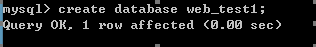

03-多表设计与查询一. 今日目标二. 今日内容(一) 数据库的备份和还原1. 数据库备份2. 数据库还原3. 可视化界面完成备份和还原(二) 多表查询1. 查询语法2. 数据准备3. 多表查询分类内连接外连接子查询4. 多表查询练习(三) 数据库事物1. 事物概述2. 环境准备3. 转账案例提交事物回滚事物4. 事物特性5. 安全性问题6. 事物的隔离级别演示脏读避免脏读避免不可重复读避免虚读/幻读(四) DCL语句SQL分类DCL语句管理用户权限管理三. 作业练习作业一 : 图书管理系统作业二 : 入学分班系统
03-多表设计与查询
一. 今日目标
- 了解数据库设计的三大范式
- 能够使用内连接进行多表查询
- 能够使用左外连接和右外连接进行多表查询
- 能够使用子查询进行多表查询
- 能够理解多表查询的规律
- 能够完成数据的备份和恢复
二. 今日内容
(一) 数据库的备份和还原
1. 数据库备份
步骤一: 打开cmd的命令行窗口,执行命令
mysqldump -u root -p web_test1 >C:/web_test1.sql
箭头后面的就是备份文件的全路径
2. 数据库还原
第一种还原方式
步骤一: 在数据库服务器内部创建数据库

步骤二: 在命令行窗口执行还原命令
xxxxxxxxxxmysql -u root -p web_test1 < C:/web_test1.sql
第二种还原方式
步骤一: 在数据库服务器内部创建数据库

步骤二: 登录数据库,切换到该数据库,在mysql命令行窗口执行source命令还原
3. 可视化界面完成备份和还原
备份
还原
(二) 多表查询
1. 查询语法
xxxxxxxxxxselect 列名列表from 表名列表where 条件2. 数据准备
x-- 创建部门表CREATE TABLE dept( id INT PRIMARY KEY AUTO_INCREMENT, NAME VARCHAR(20));INSERT INTO dept (NAME) VALUES ('开发部'),('市场部'),('财务部'),('销售部');-- 创建员工表CREATE TABLE emp ( id INT PRIMARY KEY AUTO_INCREMENT, NAME VARCHAR(10), gender CHAR(1), -- 性别 salary DOUBLE, -- 工资 join_date DATE, -- 入职日期 dept_id INT, FOREIGN KEY (dept_id) REFERENCES dept(id) -- 外键，关联部门表(部门表的主键));INSERT INTO emp(NAME,gender,salary,join_date,dept_id) VALUES('孙悟空','男',7200,'2013-02-24',1);INSERT INTO emp(NAME,gender,salary,join_date,dept_id) VALUES('猪八戒','男',3600,'2010-12-02',2);INSERT INTO emp(NAME,gender,salary,join_date,dept_id) VALUES('唐僧','男',9000,'2008-08-08',2);INSERT INTO emp(NAME,gender,salary,join_date,dept_id) VALUES('白骨精','女',5000,'2015-10-07',3);INSERT INTO emp(NAME,gender,salary,join_date,dept_id) VALUES('蜘蛛精','女',4500,'2011-03-14',1);INSERT INTO emp(NAME,gender,salary,join_date,dept_id) VALUES('李世民','男',10000,'1820-09-11',NULL);3. 多表查询分类
xxxxxxxxxx1. 内连接 `INNER` 可以省略* 显示内连接: `SELECT * FROM 表1 INNER JOIN 表2 ON 连接条件`* 隐式内连接: `SELECT * FROM 表1 , 表2 WHERE 连接条件`2. 外连接 : `OUTER` 可以省略* 左外连接: `SELECT * FROM 表1 LEFT OUTER JOIN 表2 ON 连接条件`* 右外连接: `SELECT * FROM 表1 RIGHT OUTER JOIN 表2 ON 连接条件`3. 子查询 :其实就是SQL的嵌套* 单行子查询: 子句的查询结果只有一行 `SELECT * FROM 表1 WHERE 字段名称 = (子查询语句)`* 多行子查询: 子句的查询结果有多行 `SELECT * FROM 表1 WHERE 字段名称 in (子查询语句)`
内连接
xxxxxxxxxx1. 隐式内连接：使用where条件消除无用数据-- 查询所有员工信息和对应的部门信息SELECT * FROM emp,dept WHERE emp.`dept_id` = dept.`id`;-- 查询员工表的名称，性别。部门表的名称SELECT emp.name,emp.gender,dept.name FROM emp,dept WHERE emp.`dept_id` = dept.`id`;-- 使用别名进行查询SELECT t1.name, -- 员工表的姓名 t1.gender,-- 员工表的性别 t2.name -- 部门表的名称FROM emp t1, dept t2WHERE t1.`dept_id` = t2.`id`;2. 显式内连接：* 语法： select 字段列表 from 表名1 [inner] join 表名2 on 条件* 例如： -- 查询所有的部门及员工信息 SELECT * FROM emp INNER JOIN dept ON emp.`dept_id` = dept.`id`; SELECT * FROM emp JOIN dept ON emp.`dept_id` = dept.`id`;xxxxxxxxxx注意:使用内连接查询,要先分析清除以下的三个方面：1. 从哪些表中查询数据2. 条件是什么3. 查询哪些字段
外连接
xxxxxxxxxx1. 左外连接： * 语法：select 字段列表 from 表1 left [outer] join 表2 on 条件； * 查询的是左表所有数据以及其交集部分。 * 例子： -- 查询所有员工信息，如果员工有部门，则查询部门名称，没有部门，则不显示部门名称 SELECT t1.*,t2.`name` FROM emp t1 LEFT JOIN dept t2 ON t1.`dept_id` = t2.`id`;2. 右外连接： * 语法：select 字段列表 from 表1 right [outer] join 表2 on 条件； * 查询的是右表所有数据以及其交集部分。 * 例子： -- 查询所有的部门及员工信息,没有员工的部门也要展示 SELECT * FROM dept t2 RIGHT JOIN emp t1 ON t1.`dept_id` = t2.`id`;内连接和左外连接右外连接的结果集的区别
子查询
子查询 ：查询中嵌套查询，称嵌套查询为子查询。
xxxxxxxxxx-- 查询工资最高的员工信息-- 1 查询最高的工资是多少 9000SELECT MAX(salary) FROM emp;-- 2 查询员工信息，并且工资等于9000的SELECT * FROM emp WHERE emp.`salary` = 9000;-- 一条sql就完成这个操作。子查询SELECT * FROM emp WHERE emp.`salary` = (SELECT MAX(salary) FROM emp);- 单行单列子查询:子查询的结果是单行单列的：
xxxxxxxxxx* 子查询可以作为条件，使用运算符去判断。 运算符： > >= < <= =-- 查询员工工资小于平均工资的人SELECT * FROM emp WHERE emp.salary < (SELECT AVG(salary) FROM emp);- 多行单列子查询:子查询的结果是多行单列的：
xxxxxxxxxx-- 子查询可以作为条件，使用运算符in来判断-- 查询'财务部'和'市场部'所有的员工信息SELECT id FROM dept WHERE NAME = '财务部' OR NAME = '市场部';SELECT * FROM emp WHERE dept_id = 3 OR dept_id = 2;-- 子查询SELECT * FROM emp WHERE dept_id IN (SELECT id FROM dept WHERE NAME = '财务部' OR NAME = '市场部');- 多行多列子查询:子查询的结果是多行多列的
xxxxxxxxxx-- 子查询可以作为一张虚拟表参与查询-- 查询员工入职日期是2011-11-11日之后的员工信息和部门信息-- 子查询SELECT * FROM dept t1 ,(SELECT * FROM emp WHERE emp.`join_date` > '2011-11-11') t2 WHERE t1.id = t2.dept_id;-- 普通内连接SELECT * FROM emp t1,dept t2 WHERE t1.`dept_id` = t2.`id` AND t1.`join_date` > '2011-11-11'
4. 多表查询练习
准备
xxxxxxxxxx-- 部门表CREATE TABLE dept ( id INT PRIMARY KEY PRIMARY KEY, -- 部门id dname VARCHAR(50), -- 部门名称 loc VARCHAR(50) -- 部门所在地);-- 添加4个部门INSERT INTO dept(id,dname,loc) VALUES(10,'教研部','北京'),(20,'学工部','上海'),(30,'销售部','广州'),(40,'财务部','深圳');-- 职务表，职务名称，职务描述CREATE TABLE job ( id INT PRIMARY KEY, jname VARCHAR(20), description VARCHAR(50));-- 添加4个职务INSERT INTO job (id, jname, description) VALUES(1, '董事长', '管理整个公司，接单'),(2, '经理', '管理部门员工'),(3, '销售员', '向客人推销产品'),(4, '文员', '使用办公软件');-- 员工表CREATE TABLE emp ( id INT PRIMARY KEY, -- 员工id ename VARCHAR(50), -- 员工姓名 job_id INT, -- 职务id mgr INT , -- 上级领导 joindate DATE, -- 入职日期 salary DECIMAL(7,2), -- 工资 bonus DECIMAL(7,2), -- 奖金 dept_id INT, -- 所在部门编号 CONSTRAINT emp_jobid_ref_job_id_fk FOREIGN KEY (job_id) REFERENCES job (id), CONSTRAINT emp_deptid_ref_dept_id_fk FOREIGN KEY (dept_id) REFERENCES dept (id));-- 添加员工INSERT INTO emp(id,ename,job_id,mgr,joindate,salary,bonus,dept_id) VALUES(1001,'孙悟空',4,1004,'2000-12-17','8000.00',NULL,20),(1002,'卢俊义',3,1006,'2001-02-20','16000.00','3000.00',30),(1003,'林冲',3,1006,'2001-02-22','12500.00','5000.00',30),(1004,'唐僧',2,1009,'2001-04-02','29750.00',NULL,20),(1005,'李逵',4,1006,'2001-09-28','12500.00','14000.00',30),(1006,'宋江',2,1009,'2001-05-01','28500.00',NULL,30),(1007,'刘备',2,1009,'2001-09-01','24500.00',NULL,10),(1008,'猪八戒',4,1004,'2007-04-19','30000.00',NULL,20),(1009,'罗贯中',1,NULL,'2001-11-17','50000.00',NULL,10),(1010,'吴用',3,1006,'2001-09-08','15000.00','0.00',30),(1011,'沙僧',4,1004,'2007-05-23','11000.00',NULL,20),(1012,'李逵',4,1006,'2001-12-03','9500.00',NULL,30),(1013,'小白龙',4,1004,'2001-12-03','30000.00',NULL,20),(1014,'关羽',4,1007,'2002-01-23','13000.00',NULL,10);-- 工资等级表CREATE TABLE salarygrade ( grade INT PRIMARY KEY, -- 级别 losalary INT, -- 最低工资 hisalary INT -- 最高工资);-- 添加5个工资等级INSERT INTO salarygrade(grade,losalary,hisalary) VALUES (1,7000,12000), (2,12010,14000), (3,14010,20000),(4,20010,30000),(5,30010,99990);需求
- 查询所有员工信息。查询员工编号，员工姓名，工资，职务名称，职务描述
xxxxxxxxxx/* 分析： 1.员工编号，员工姓名，工资，需要查询emp表 职务名称，职务描述 需要查询job表 2.查询条件 emp.job_id = job.id*/SELECT t1.`id`, -- 员工编号 t1.`ename`, -- 员工姓名 t1.`salary`,-- 工资 t2.`jname`, -- 职务名称 t2.`description` -- 职务描述FROM emp t1, job t2WHERE t1.`job_id` = t2.`id`;- 查询员工编号，员工姓名，工资，职务名称，职务描述，部门名称，部门位置
xxxxxxxxxx/* 分析： 1. 员工编号，员工姓名，工资 emp 职务名称，职务描述 job 部门名称，部门位置 dept 2. 条件： emp.job_id = job.id and emp.dept_id = dept.id*/SELECT t1.`id`, -- 员工编号 t1.`ename`, -- 员工姓名 t1.`salary`,-- 工资 t2.`jname`, -- 职务名称 t2.`description`, -- 职务描述 t3.`dname`, -- 部门名称 t3.`loc` -- 部门位置FROM emp t1, job t2,dept t3WHERE t1.`job_id` = t2.`id` AND t1.`dept_id` = t3.`id`;- 查询员工姓名，工资，工资等级
xxxxxxxxxx/* 分析： 1.员工姓名，工资 emp 工资等级 salarygrade 2.条件 emp.salary >= salarygrade.losalary and emp.salary <= salarygrade.hisalary emp.salary BETWEEN salarygrade.losalary and salarygrade.hisalary*/SELECT t1.ename , t1.`salary`, t2.*FROM emp t1, salarygrade t2WHERE t1.`salary` BETWEEN t2.`losalary` AND t2.`hisalary`;- 查询员工姓名，工资，职务名称，职务描述，部门名称，部门位置，工资等级
xxxxxxxxxx/* 分析： 1. 员工姓名，工资 emp ， 职务名称，职务描述 job 部门名称，部门位置，dept 工资等级 salarygrade 2. 条件： emp.job_id = job.id and emp.dept_id = dept.id and emp.salary BETWEEN salarygrade.losalary and salarygrade.hisalary*/SELECT t1.`ename`, t1.`salary`, t2.`jname`, t2.`description`, t3.`dname`, t3.`loc`, t4.`grade`FROM emp t1,job t2,dept t3,salarygrade t4WHERE t1.`job_id` = t2.`id` AND t1.`dept_id` = t3.`id` AND t1.`salary` BETWEEN t4.`losalary` AND t4.`hisalary`;- 查询出部门编号、部门名称、部门位置、部门人数
xxxxxxxxxx/* 分析： 1.部门编号、部门名称、部门位置 dept 表。 部门人数 emp表 2.使用分组查询。按照emp.dept_id完成分组，查询count(id) 3.使用子查询将第2步的查询结果和dept表进行关联查询*/SELECT t1.`id`,t1.`dname`,t1.`loc` , t2.totalFROM dept t1, (SELECT dept_id,COUNT(id) total FROM emp GROUP BY dept_id) t2WHERE t1.`id` = t2.dept_id;- 查询所有员工的姓名及其直接上级的姓名,没有领导的员工也需要查询
xxxxxxxxxx/* 分析： 1.姓名 emp， 直接上级的姓名 emp * emp表的id 和 mgr 是自关联 2.条件 emp.id = emp.mgr 3.查询左表的所有数据，和 交集数据 * 使用左外连接查询*/-- 员工的姓名及其直接上级的姓名,领导的员工不查询select t1.ename, t1.mgr, t2.`id`, t2.enamefrom emp t1, emp t2where t1.mgr = t2.`id`;-- 查询所有员工的姓名及其直接上级的姓名,没有领导的员工也需要查询SELECT t1.ename, t1.mgr, t2.`id`, t2.`ename`FROM emp t1LEFT JOIN emp t2ON t1.`mgr` = t2.`id`;(三) 数据库事物
1. 事物概述
xxxxxxxxxx事务：指的是逻辑上的一组操作，组成这组操作的各个逻辑单元，要么全都成功，要么全都失败。MYSQL命令行窗口事物常用操作有三个:1. 开启事物:`start transaction`
xxxxxxxxxx2. 提交事物`commit`3. 回滚事物:`rollback`
xxxxxxxxxxMySQL数据库中事务默认自动提交,事务提交的两种方式：1. 自动提交：* mysql就是自动提交的* 一条DML(增删改)语句会自动提交一次事务。2. 手动提交：* Oracle 数据库默认是手动提交事务* 需要先开启事务，再提交* 修改事务的默认提交方式：- 查看事务的默认提交方式：SELECT @@autocommit; -- 1 代表自动提交 0 代表手动提交- 修改默认提交方式： set @@autocommit = 0;
2. 环境准备
xxxxxxxxxxcreate table account( id int primary key auto_increment, name varchar(20), money double);insert into account values (null,'小张',10000);insert into account values (null,'小凤',10000);3. 转账案例
提交事物
xxxxxxxxxxstart transaction ; -- 开启事物update account set money = money-1000 where name='小张'; -- 扣除小张账户的钱update account set money = money+1000 where name='小风'; -- 给小风的账户添加钱commit; -- 提交事物回滚事物
xxxxxxxxxxupdate account set money = 10000; -- 恢复数据start transaction ; -- 开启事物update account set money = money-1000 where name='小张'; -- 扣除小张账户的钱update account set money = money+1000 where name='小风'; -- 给小风的账户添加钱rollback; -- 提交事物4. 事物特性
xxxxxxxxxx1. 原子性:事务的不可分割，组成事务的各个逻辑单元不可分割2. 一致性：事务执行的前后，数据完整性保持一致3. 隔离性：事务执行不应该受到其他事务的干扰4. 持久性：事务一旦结束，数据就持久化到数据库中
5. 安全性问题
xxxxxxxxxx隔离性：一个事务的执行，不应该受到其他事务的干扰。如果不考虑隔离性（一个事务执行受到其他的事务的干扰），引发一些安全问题，主要体现在读取数据上：1. 脏读：一个事务，读取到另一个事务中没有提交的数据,导致多次读取到的数据不一样。2. 不可重复读(虚读)：一个事物读到了另一个事物已经提交的update的数据,导致多次读取到的数据不一样。3. 幻读：一个事务读到了另一个事务已经提交的insert的数据，导致多次查询结果不一致。
6. 事物的隔离级别
xxxxxxxxxx可以通过设置事物的隔离级别解决这些安全性问题1. read uncommitted(读未提交) ： 脏读，不可重复读，虚读都有可能发生2. read committed(读已提交) ：避免脏读。但是不可重复读和虚读是有可能发生3. repeatable read(可重复读) ：避免脏读和不可重复读，但是虚读有可能发生4. serializable(串行化) ：避免脏读，不可重复读，虚读。
演示脏读
- 开启两个窗口A,B
- 设置A窗口的隔离级别为read uncommitted;
xxxxxxxxxx SET SESSION TRANSACTION ISOLATION LEVEL read uncommitted;
- 在A，B两个窗口中开启事务
xxxxxxxxxx start transaction;- 在B窗口中完成转账的功能：
xxxxxxxxxx update account set money = money - 1000 where name= '小张'; update account set money = money + 1000 where name= '小凤'; -- 这里不提交事物- 在A窗口中进行查询
xxxxxxxxxx select * from account;
发现A窗口中已经查询到转账成功了！！！已经发生了脏读：一个事务中已经读到了另一个事务未提交的数据。
避免脏读
- 开启两个窗口A,B
- 设置A窗口的隔离级别为read committed;
xxxxxxxxxx SET SESSION TRANSACTION ISOLATION LEVEL read committed;
- 分别在两个窗口中开启事务：
xxxxxxxxxx start transaction; - 在B窗口中完成转账
xxxxxxxxxx update account set money = money - 1000 where name= '小张'; update account set money = money + 1000 where name= '小凤'; -- 没有提交事物- 在A窗口中进行查询：
xxxxxxxxxx select * from account; 
发现这个时候没有转账成功！！！（没有查询到另一个事务未提交的数据：说明已经避免了脏读）。
- 在B窗口中提交事务
xxxxxxxxxx commit;- 在A窗口查询
xxxxxxxxxx select * from account;
发现这次的结果已经发生了变化！！！（已经发生不可重复读：一个事务已经读到了另一个事务提交的update的数据，导致多次查询结果不一
避免不可重复读
- 分别开启两个窗口A，B
- 设置A窗口的隔离级别：repeatable read;
xxxxxxxxxx SET SESSION TRANSACTION ISOLATION LEVEL repeatable read;
- 在A，B两个窗口中开启事务:
xxxxxxxxxx start transaction;- 在B窗口完成转账
xxxxxxxxxx update account set money = money - 1000 where name= '小张'; update account set money = money + 1000 where name= '小凤'; -- 没有提交事物
- 在A窗口中进行查询
xxxxxxxxxx select * from account;发现没有转账成功：说明避免脏读！！！
- 在B窗口中提交事务
xxxxxxxxxx commit;- 在A窗口中再次查询：
xxxxxxxxxx select * from account;
发现在一个事务中的多次查询结果是一致！！！（已经避免不可重复读）
避免虚读/幻读
- 开启两个窗口A,B
- 设置A窗口的隔离级别：serializable
xxxxxxxxxx SET SESSION TRANSACTION ISOLATION LEVEL serializable;
- 分别在两个窗口中开启事务：
xxxxxxxxxx start transaction;- 在B窗口中插入一条记录
xxxxxxxxxx insert into account values (null,'小李',10000);- 在A窗口中进行查询
xxxxxxxxxx select * from account;发现A窗口已经卡住了（说明事务不允许出现并发，A窗口需要等待B窗口事务执行完成以后，才会执行A窗口的事务。）当B窗口的事务结束（提交或者回滚），那么A窗口马上就会出现结果。
(四) DCL语句
SQL分类
xxxxxxxxxx1. DDL：操作数据库和表2. DML：增删改表中数据3. DQL：查询表中数据4. DCL：管理用户，授权
DCL语句
管理用户
1. 添加用户
xxxxxxxxxxCREATE USER '用户名'@'主机名' IDENTIFIED BY '密码';
2. 删除用户
xxxxxxxxxxDROP USER '用户名'@'主机名'
3. 修改用户密码
xxxxxxxxxx-- 第一种方式UPDATE USER SET PASSWORD = PASSWORD('新密码') WHERE USER = '用户名';UPDATE USER SET PASSWORD = PASSWORD('abc') WHERE USER = 'lisi';-- 第二种方式SET PASSWORD FOR '用户名'@'主机名' = PASSWORD('新密码');SET PASSWORD FOR 'root'@'localhost' = PASSWORD('123');4. 忘记密码
xxxxxxxxxx1. cmd -- > net stop mysql 停止mysql服务* 需要管理员运行该cmd2. 使用无验证方式启动mysql服务： mysqld --skip-grant-tables3. 打开新的cmd窗口,直接输入mysql命令，敲回车。就可以登录成功4. use mysql;5. update user set password = password('你的新密码') where user = 'root';6. 关闭两个窗口7. 打开任务管理器，手动结束mysqld.exe 的进程8. 启动mysql服务9. 使用新密码登录。
5. 查询用户
xxxxxxxxxx-- 1. 切换到mysql数据库USE myql;-- 2. 查询user表SELECT * FROM USER;-- 通配符： % 表示可以在任意主机使用用户登录数据库权限管理
- 查询权限：
xxxxxxxxxx-- 查询权限SHOW GRANTS FOR '用户名'@'主机名';SHOW GRANTS FOR 'lisi'@'%';- 授予权限：
xxxxxxxxxx-- 授予权限grant 权限列表 on 数据库名.表名 to '用户名'@'主机名';-- 给张三用户授予所有权限，在任意数据库任意表上GRANT ALL ON *.* TO 'zhangsan'@'localhost';- 撤销权限：
xxxxxxxxxx-- 撤销权限：revoke 权限列表 on 数据库名.表名 from '用户名'@'主机名';REVOKE UPDATE ON db3.`account` FROM 'lisi'@'%';
三. 作业练习
作业一 : 图书管理系统
学生信息表：student
| 字段名称 | 数据类型 | 说明 |
|---|---|---|
| stuID | char(10) | 学生编号，主键 |
| stuName | Varchar(10) | 学生名称 |
| major | Varchar(50) | 专业 |
图书表：book
| 字段名称 | 数据类型 | 说明 |
|---|---|---|
| BID | char(10) | 图书编号，主键 |
| title | char(50) | 书名 |
| author | char(20) | 作者 |
借书信息表：borrow
| 字段名称 | 数据类型 | 说明 |
|---|---|---|
| borrowID | char(10) | 借书编号，主键 |
| stuID | char(10) | 学生编号，外键 |
| BID | char(10) | 图书编号，外键 |
| time | datetime | 借书日期 |
| B_time | datetime | 还书日期 |
创建表插入如下数据:
xxxxxxxxxx-- 创建图书表CREATE TABLE book ( BID CHAR(10) NOT NULL, title CHAR(50) DEFAULT NULL, author CHAR(20) DEFAULT NULL, PRIMARY KEY (BID));INSERT INTO book VALUES ('B001', '人生若只如初见', '安意如');INSERT INTO book VALUES ('B002', '入学那天遇见你', '晴空');INSERT INTO book VALUES ('B003', '感谢折磨你的人', '如娜');INSERT INTO book VALUES ('B004', '我不是教你诈', '刘庸');INSERT INTO book VALUES ('B005', '英语四级', '白雪');-- 创建借书表CREATE TABLE borrow ( borrowID CHAR(10) NOT NULL, stuID CHAR(10) DEFAULT NULL, BID CHAR(10) DEFAULT NULL, T_time VARCHAR(50) DEFAULT NULL, B_time VARCHAR(50) DEFAULT NULL, PRIMARY KEY (borrowID)) ;INSERT INTO borrow VALUES ('T001', '1001', 'B001', '2007-12-26 00:00:00', NULL);INSERT INTO borrow VALUES ('T002', '1004', 'B003', '2008-01-05 00:00:00', NULL);INSERT INTO borrow VALUES ('T003', '1005', 'B001', '2007-10-08 00:00:00', '2007-12-25 00:00:00');INSERT INTO borrow VALUES ('T004', '1005', 'B002', '2007-12-16 00:00:00', '2008-01-07 00:00:00');INSERT INTO borrow VALUES ('T005', '1002', 'B004', '2007-12-22 00:00:00', NULL);INSERT INTO borrow VALUES ('T006', '1005', 'B005', '2008-01-06 00:00:00', NULL);INSERT INTO borrow VALUES ('T007', '1002', 'B001', '2007-09-11 00:00:00', NULL);INSERT INTO borrow VALUES ('T008', '1005', 'B004', '2007-12-10 00:00:00', NULL);INSERT INTO borrow VALUES ('T009', '1004', 'B005', '2007-10-16 00:00:00', '2007-12-18 00:00:00');INSERT INTO borrow VALUES ('T010', '1002', 'B002', '2007-09-15 00:00:00', '2008-01-05 00:00:00');INSERT INTO borrow VALUES ('T011', '1004', 'B003', '2007-12-28 00:00:00', NULL);INSERT INTO borrow VALUES ('T012', '1002', 'B003', '2007-12-30 00:00:00', NULL);-- 创建学生表CREATE TABLE student ( stuID CHAR(10) NOT NULL, stuName VARCHAR(10) DEFAULT NULL, major VARCHAR(50) DEFAULT NULL, PRIMARY KEY (stuID)) ;INSERT INTO student VALUES ('1001', '林林', '计算机');INSERT INTO student VALUES ('1002', '白杨', '计算机');INSERT INTO student VALUES ('1003', '虎子', '英语');INSERT INTO student VALUES ('1004', '北漂的雪', '工商管理');INSERT INTO student VALUES ('1005', '五月', '数学');按要求查询下列结果
- 查询“计算机”专业学生在“2007-12-15”至“2008-1-8”时间段内借书的学生编号、学生名称、图书编号、图书名称、借出日期；
xxxxxxxxxxSELECT s.stuID 学生编号 ,s.stuName 学生名称 ,bk.BID 图书编号 ,bk.title 图书名称 ,b.t_time 借出日期 FROM student s INNER JOIN borrow b ON s.stuID = b.stuID INNER JOIN book bk ON bk.BID = b.BID WHERE s.major = '计算机' AND b.t_time BETWEEN '2007-12-15' AND '2008-1-8' - 查询所有借过图书的学生编号、学生名称、专业；
xxxxxxxxxxSELECT DISTINCT s.stuID 学生编号 ,s.stuName 学生名称 ,s.major 专业 FROM student s INNER JOIN borrow b ON s.stuID = b.stuID - 查询没有借过图书的学生编号、学生名称、专业；
xxxxxxxxxxSELECT DISTINCT s.stuID 学生编号 ,s.stuName 学生名称 ,s.major 专业 FROM student s LEFT OUTER JOIN borrow b ON s.stuID = b.stuID WHERE b.borrowID IS NULL - 查询借过作者为“安意如”的图书的学生姓名、图书名称、借出日期、归还日期；
xxxxxxxxxxSELECT s.stuName 学生名称,bk.title 图书名称,b.t_time 借出日期 ,b.B_time 归还日期 FROM student s INNER JOIN borrow b ON s.stuID = b.stuID INNER JOIN book bk ON bk.BID = b.BID WHERE bk.author = '安意如' - 查询借过书但有书未归还的学生编号、学生名称、图书编号、图书名称、借出日期
xxxxxxxxxxSELECT s.stuID 学生编号 ,s.stuName 学生名称,bk.title 图书名称,b.t_time 借出日期 FROM student s INNER JOIN borrow b ON s.stuID = b.stuID INNER JOIN book bk ON bk.BID=b.BID WHERE b.B_time IS NULL - 查询目前借书但未归还图书的学生名称及未还图书数量；
xxxxxxxxxxSELECT s.stuName 学生名称,COUNT(1) 未还图书数量 FROM student s INNER JOIN borrow b ON s.stuID = b.stuID WHERE b.B_time IS NULL GROUP BY s.stuName ,s.stuID 作业二 : 入学分班系统
学生表 student
| 字段名称 | 数据类型 | 说明 |
|---|---|---|
| sid | varchar(10) | 学号,主键 |
| sname | varchar(10) | 学生姓名 |
| sage | int | 年龄 |
| cid | varchar(10) | 所属班级id |
班级表 class
| 字段名称 | 数据类型 | 说明 |
|---|---|---|
| cid | varchar(10) | 班号 ,主键 |
| major | varchar(10) | 专业名 |
| did | varchar(10) | 所属系的id |
| entrydate | date | 入学年份 |
系 department
| 字段名称 | 数据类型 | 说明 |
|---|---|---|
| did | varchar(10) | 系号 主键 |
| dname | varchar(10) | 系名 |
创建表,插入如下数据
xxxxxxxxxxCREATE TABLE class ( cid VARCHAR(10) NOT NULL, major VARCHAR(10) DEFAULT NULL, did VARCHAR(10) DEFAULT NULL, entrydate VARCHAR(4) DEFAULT NULL, PRIMARY KEY (cid)) ;INSERT INTO class VALUES ('101', '软件', '002', '1995');INSERT INTO class VALUES ('102', '微电子', '002', '1996');INSERT INTO class VALUES ('111', '无机化学', '003', '1995');INSERT INTO class VALUES ('112', '高分子化学', '003', '1996');INSERT INTO class VALUES ('121', '统计数学', '001', '1995');INSERT INTO class VALUES ('131', '现代语言', '004', '1996');INSERT INTO class VALUES ('141', '国际贸易', '005', '1997');INSERT INTO class VALUES ('142', '国际金融', '005', '1996');INSERT INTO class VALUES ('143', '电子商务', '005', '1998');CREATE TABLE department ( did VARCHAR(10) NOT NULL, dname VARCHAR(10) DEFAULT NULL, PRIMARY KEY (did)) ;INSERT INTO department VALUES ('001', '数学');INSERT INTO department VALUES ('002', '计算机');INSERT INTO department VALUES ('003', '化学');INSERT INTO department VALUES ('004', '中文');INSERT INTO department VALUES ('005', '经济');INSERT INTO department VALUES ('006', '物理系');CREATE TABLE student ( sid VARCHAR(10) NOT NULL, sname VARCHAR(10) NOT NULL, sage INT(6) DEFAULT NULL, cid VARCHAR(10) DEFAULT NULL, PRIMARY KEY (sid)) ;INSERT INTO student VALUES ('8101', '张三', '18', '101');INSERT INTO student VALUES ('8102', '钱四', '16', '121');INSERT INTO student VALUES ('8103', '王玲', '17', '131');INSERT INTO student VALUES ('8105', '李飞', '19', '102');INSERT INTO student VALUES ('8109', '赵四', '18', '141');INSERT INTO student VALUES ('8110', '李可', '20', '142');INSERT INTO student VALUES ('8201', '张飞', '18', '111');INSERT INTO student VALUES ('8203', '王亮', '17', '111');INSERT INTO student VALUES ('8302', '周瑜', '16', '112');INSERT INTO student VALUES ('8305', '董庆', '19', '102');INSERT INTO student VALUES ('8409', '赵龙', '18', '101');INSERT INTO student VALUES ('8510', '李丽', '20', '142');查询如下结果
1. 找出所有姓李的学生，并按其年龄由小到大排序。
xxxxxxxxxxSELECT * FROM student WHERE sname LIKE '李%' ORDER BY sage ASC2. 列出所有开设超过两个班级的系的信息
xxxxxxxxxxselect * from Department where did in ( SELECT d.did FROM class c INNER JOIN department d ON c.did = d.did GROUP BY d.did HAVING COUNT(1)>2 );3. 列出所有开设超过两个专业的系的信息。 注意不同的班级相同的专业相同的系应该去掉
xxxxxxxxxxselect * from department d where d.did in ( select did from ( SELECT did FROM class GROUP BY major ,did ) t group by did HAVING COUNT(1)>2 );4. 列出所有班级的人数及对应的系的信息
xxxxxxxxxxselect d.*,t.c 班级的人数 from department d inner join ( select c.cid,c.did,count(1) c from class c inner join student s on c.cid = s.cid GROUP BY c.cid ,c.did ) t on d.did = t.did5. 列出有班级人数大于等于2的系的编号的名称
xxxxxxxxxxselect d.*,t.c 班级的人数 from department d inner join ( select c.cid,c.did,count(1) c from class c inner join student s on c.cid = s.cid GROUP BY c.cid ,c.did having count(1)>=2 ) t on d.did = t.did6. 列出有班级人数小于2的系的编号的名称 包括没有开班的
xxxxxxxxxxselect d.*,t.c 班级的人数 from department d inner join ( select c.cid,d.did,count(1) c from class c inner join student s on c.cid = s.cid right join department d on d.did = c.did GROUP BY c.cid ,d.did having count(1)<2 ) t on d.did = t.did7. 列出每个班学生人数都大于等于2的系的编号和名称。 有班级人数小于二的系找到
xxxxxxxxxxSELECT * FROM department dp WHERE dp.did NOT IN (select d.did from department d inner join ( select c.cid,d.did,count(1) c from class c inner join student s on c.cid = s.cid right join department d on d.did = c.did GROUP BY c.cid ,d.did having count(1)<2 ) t on d.did = t.did);-- 或者SELECT dp.* FROM department dp LEFT OUTER JOIN (select d.*,t.c 班级的人数 from department d inner join ( select c.cid,d.did,count(1) c from class c inner join student s on c.cid = s.cid right join department d on d.did = c.did GROUP BY c.cid ,d.did having count(1)<2 ) t on d.did = t.did ) t ON dp.did = t.did WHERE t.did IS NULL